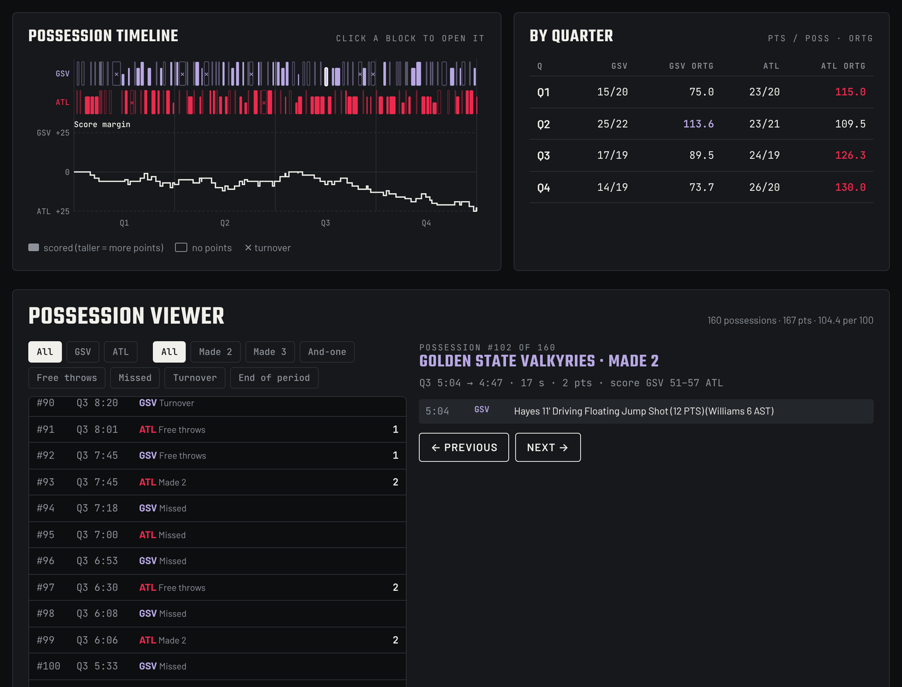
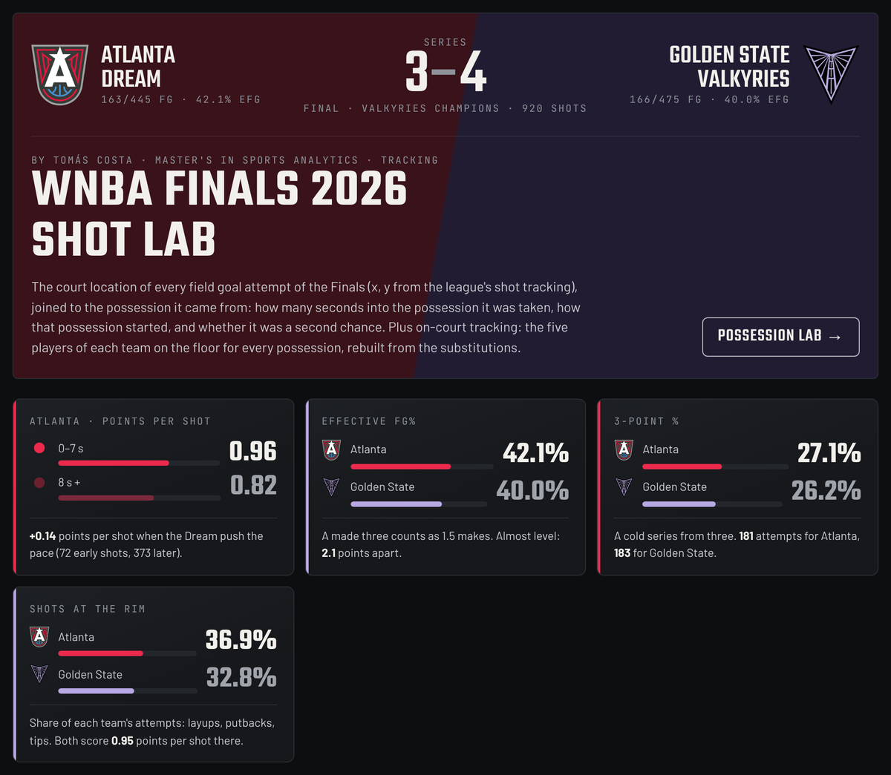
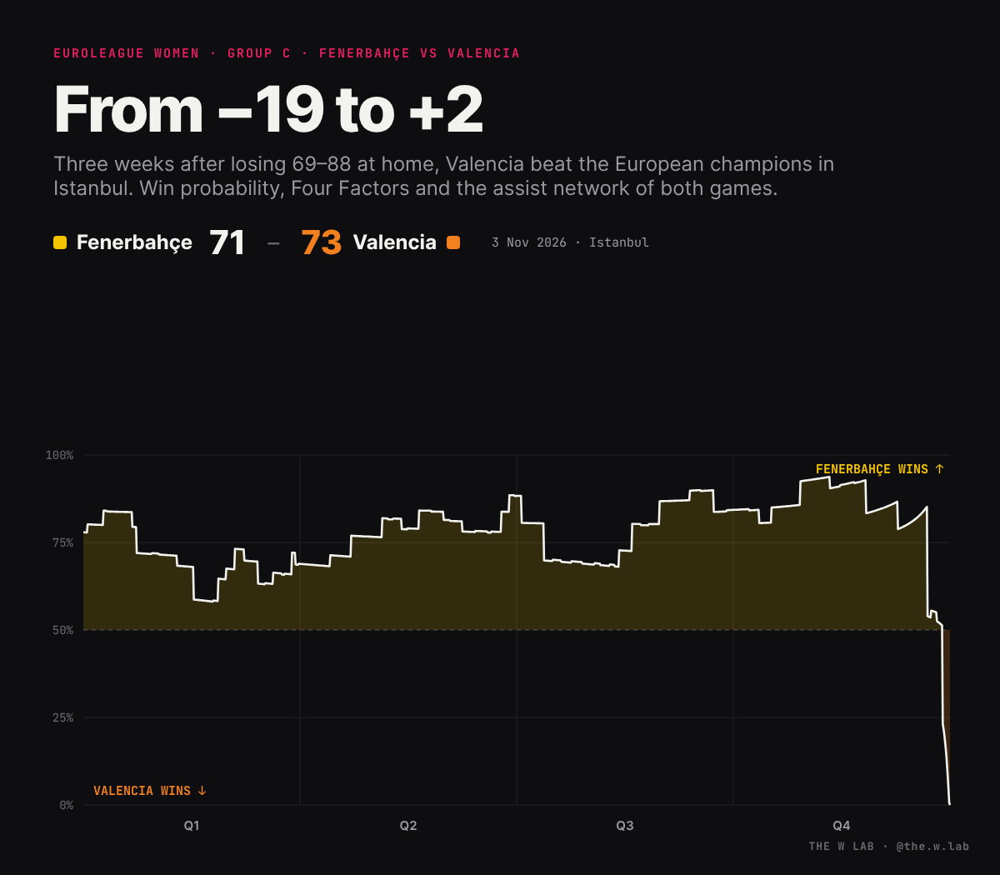
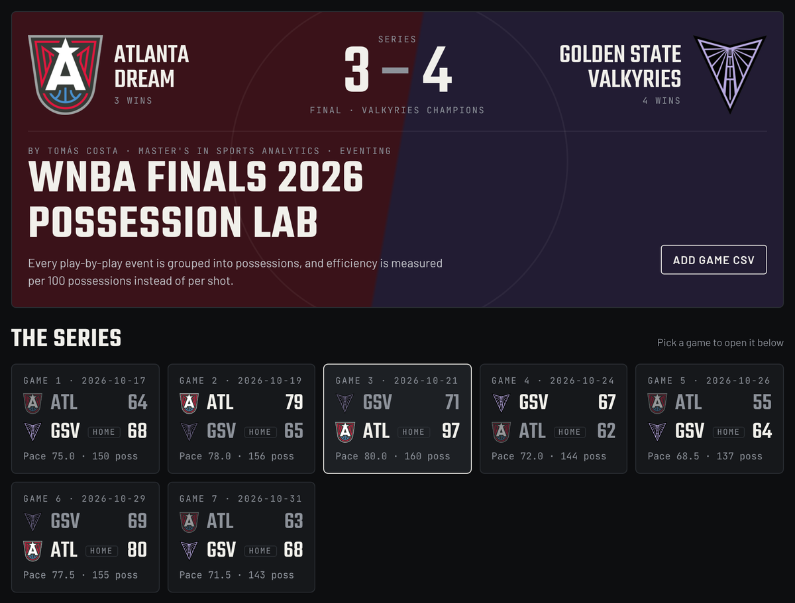
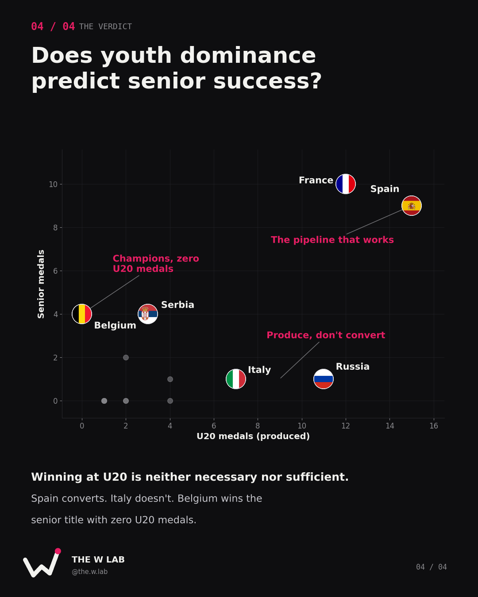
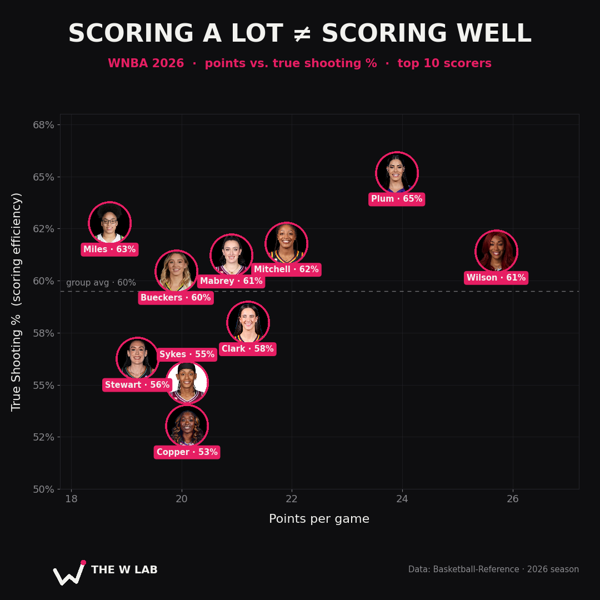
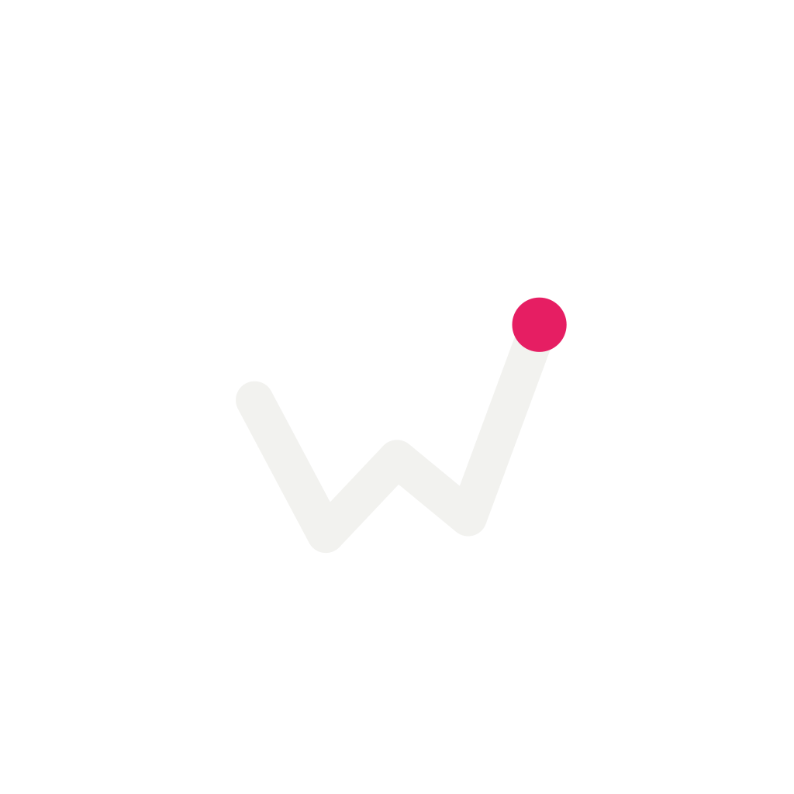

Fenerbahçe
Fenerbahçe Valencia
ValenciaFrom −19 to +2
From −19 to +2: How Valencia Finally Beat the European Champions
Three weeks after losing 69–88 at home, Valencia won 73–71 in Istanbul — their first win over Fenerbahçe in eleven tries. Win probability, Four Factors, the assist network and every possession of the last six minutes.
Fenerbahçe's points per possession in the last six minutes in Istanbul: 5 points in 13 possessions, with one field goal in nine attempts. Valencia scored 14 in 12.
Built in the lab
Interactive tools you can open and explore yourself. Every number comes from official data.

WNBA Finals Possession Lab
- Every possession of the Finals, rebuilt event by event
- Offensive and defensive efficiency per 100 possessions, and pace
- Possession timeline, efficiency by quarter and a possession viewer

WNBA Finals Shot Lab
- All 920 shots on the court, with zones and points per shot
- Each shot tied to its possession: clock, origin and second chances
- On-court tracking: on/off ratings and lineups for every possession
Latest deep dives

We Tracked All 920 Shots of the WNBA Finals — and Golden State Won the Long Possessions
Every shot of Dream vs Valkyries, tied to its possession and to who was on the floor.

From −19 to +2: How Valencia Finally Beat the European Champions
Win probability, Four Factors and the assist network of Fenerbahçe vs Valencia.

We Built a Possession Lab for the WNBA Finals — and It Says Pace Decides the Series
1,045 possessions, seven games, one number that decided them all.

Produced, Not Promised: What 25 Years of U20 Medals Say About Senior Success
Does dominating Europe's youth game predict anything at senior level?

Scoring a Lot Isn't Scoring Well
What True Shooting % reveals about the WNBA's top 10 scorers in 2026.
Golden State, champions 4–3
Seven games, 1,045 possessions and 920 shots, all in the Possession Lab and the Shot Lab.
DREAM
VALKYRIES
Golden State's record when the pace stayed below 76 possessions per 40 minutes. Above it, Atlanta went 3–0. Seven games, seven hits.
Three stats worth knowing
Turnovers Valencia committed in Istanbul — and still beat the European champions.
EuroLeague Women →Share of every U20 Women's EuroBasket ever held that Spain has won: 10 titles in 22 editions.
U20 pipeline →Kelsey Plum's True Shooting — the best efficiency among the WNBA's top 10 scorers in 2026.
True Shooting →
About The W Lab
Women's basketball, decoded by the numbers. The W Lab is run by Tomás Costa, a Sports Analytics master's student in Madrid. Analysis, data tools and deep dives on the WNBA and European basketball — the stats the highlights miss.